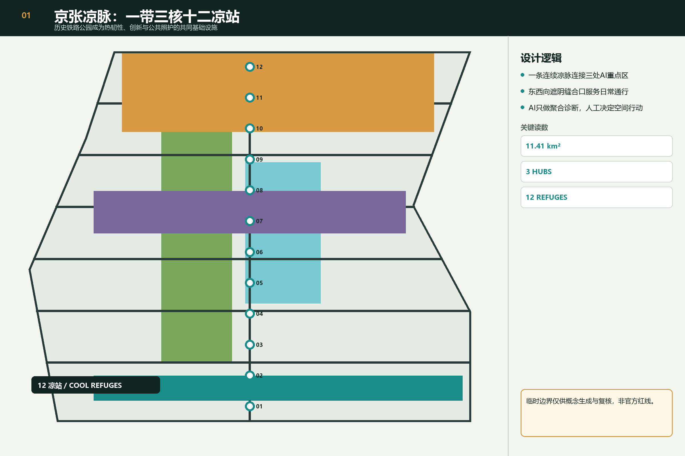
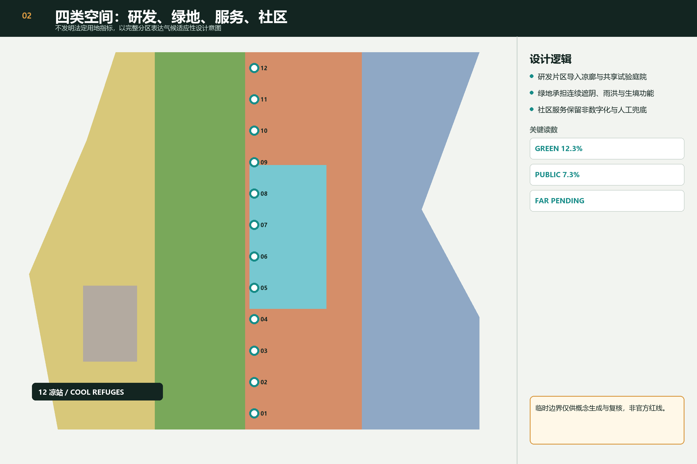
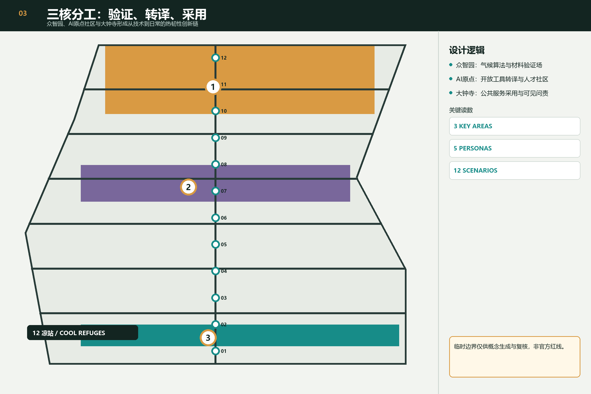
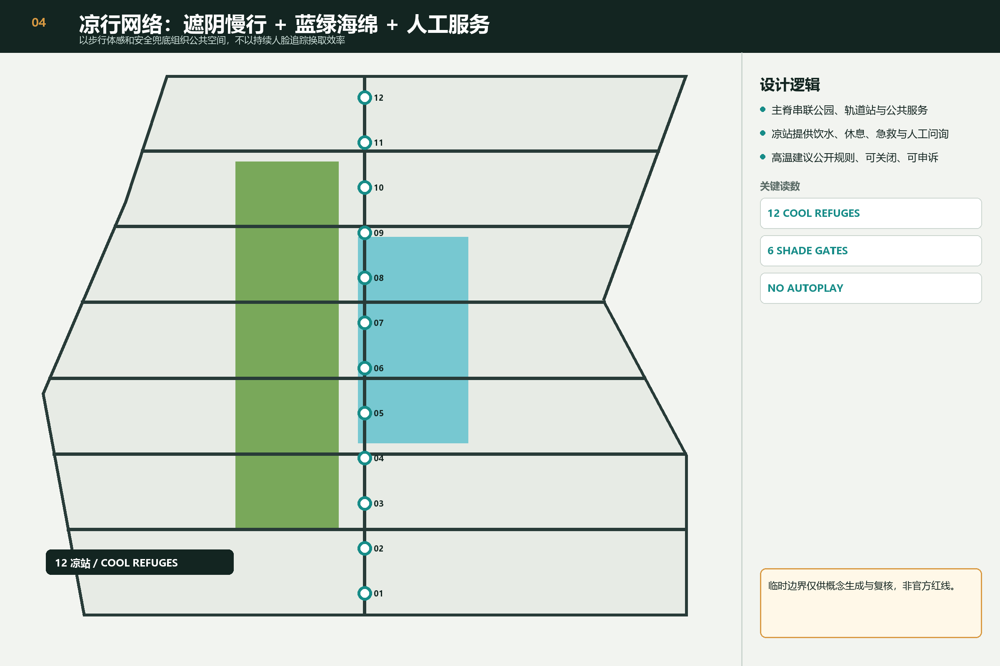
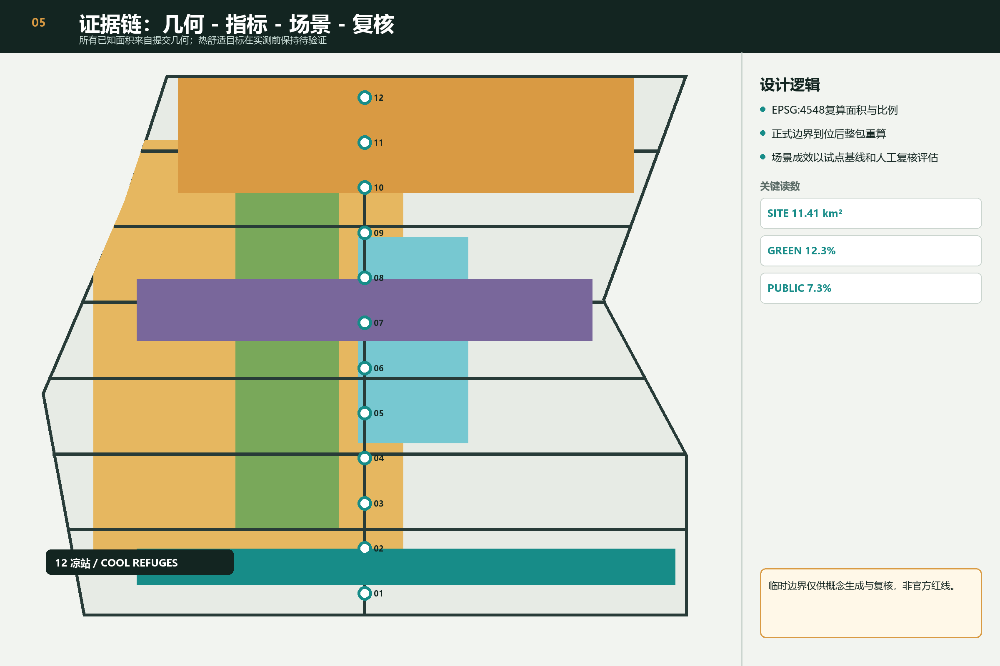

总览

空间结构

三处重点区

凉行网络

证据链

总览地图与三层范围
总体设计范围、重点区域与临时边界状态均可由图件和 GeoJSON 交叉复核。
重点区域
三处重点区分别承担验证、转译与采用。
用地分区、交通慢行、蓝绿公共空间与建筑
四类完整用地、凉行主脊、蓝绿空间和概念建筑基底共同表达设计结构。
更新项目与 AI 场景
六类更新项目、十二个场景均需人工复核并保留非数字服务。
核心指标
总体范围面积 · 绿地比例 · 公共空间比例
任务覆盖与自检状态
agent.1-agent.6、专业标准、设计深度、空间与视觉门禁由结构化矩阵和 self_check.json 记录。
来源与假设
来源登记在 sources.json；临时边界、场地热环境基线和法定控制缺口登记在 assumptions.json。